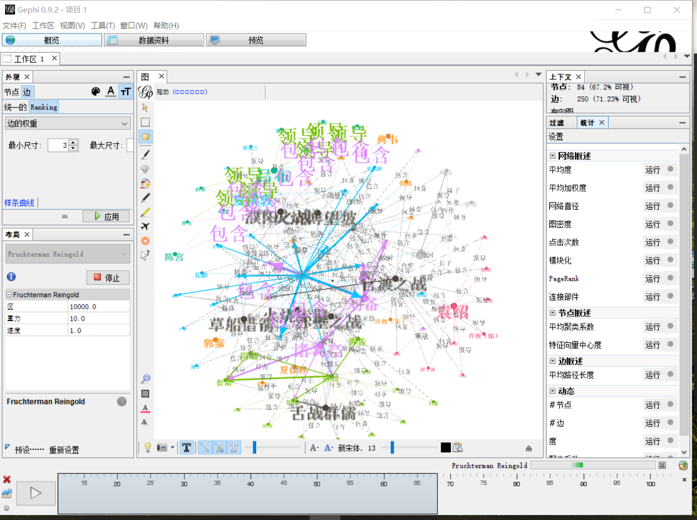
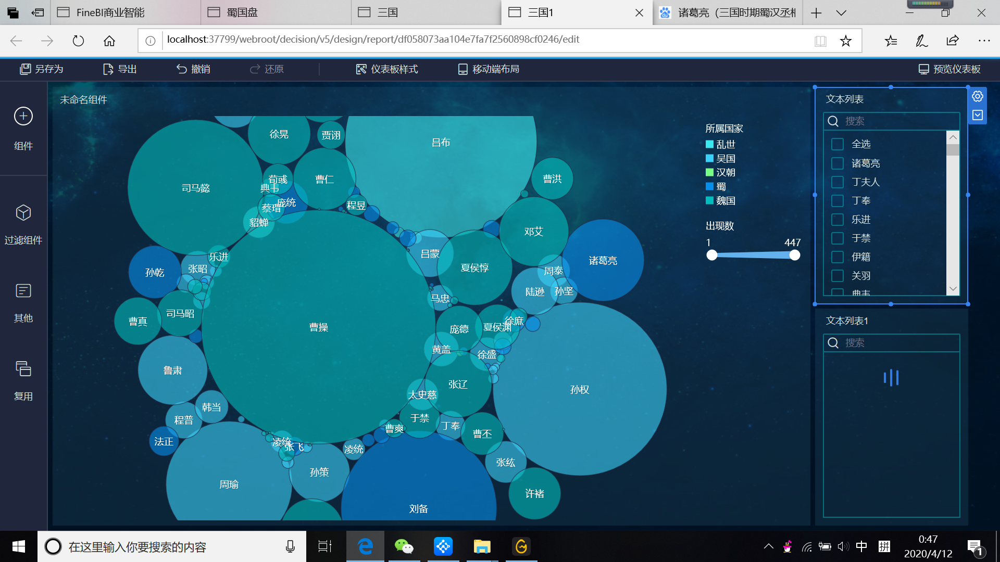
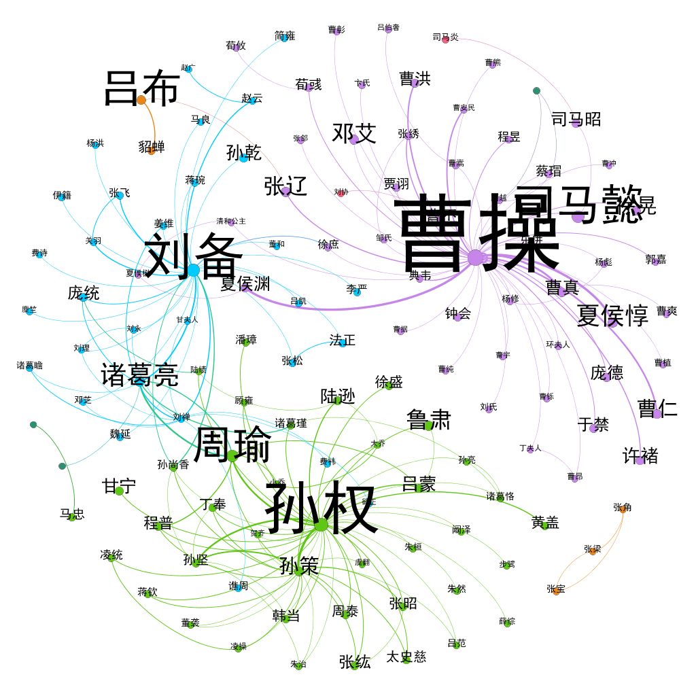
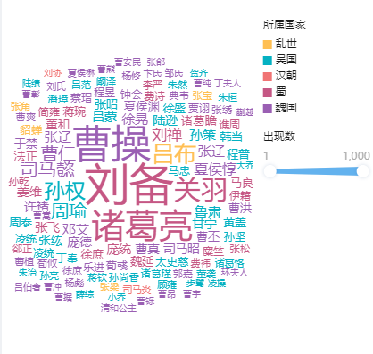
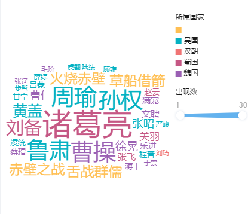
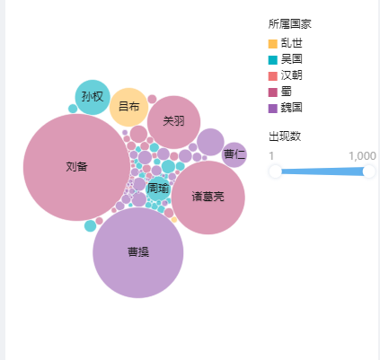
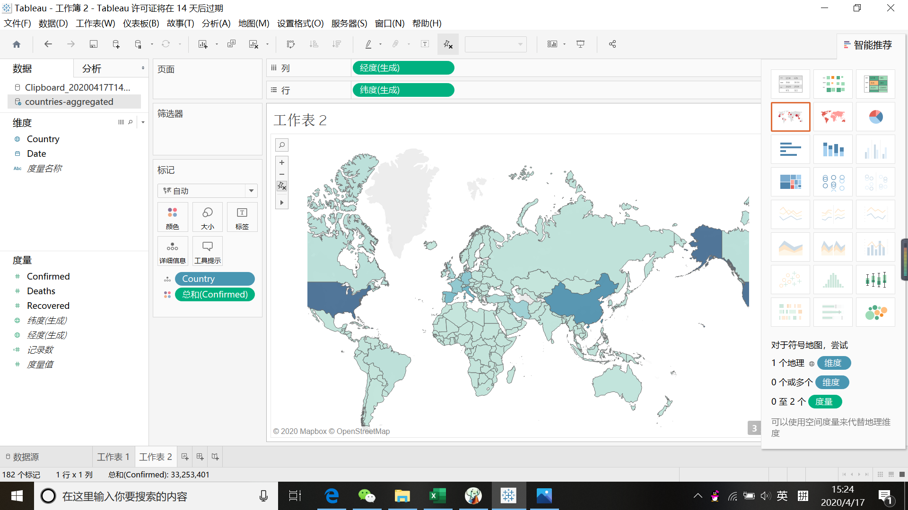
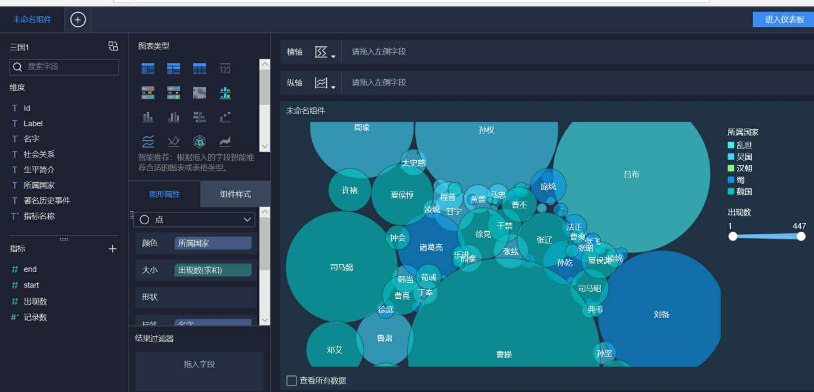

数据呈现
2019年 12月2日— 2020年 1月12日
进行爬虫，获取数据,对数据的正确性进行检验，初步把握人物关系、所占权重。


原始数据列表，按照魏国、蜀国、吴国进行分组，主要人物数据为主，其他人物数据为辅。

通过对《三国演义》原文及其互联网相关资源信息的数据爬取、关键字搜索等，我们提取出了三国人物的姓名、所属国家、相关历史事件、社会关系、出现次数等人物信息，得到了容量2000余的数据量。在对复杂的海量数据集进行深入洞察分析后，进行数据整合，将这些原始数据以表格和CSV文件进行呈现，同时，利用SQL数据库和EXCEL等软件对其进行筛选和分类处理。
软件应用
2020年 1月13日— 2020年 2月24日
Gephi

以人物姓名、生卒年、社会关系、出现次数为基点，构建节点数据和边界数据，利用Gephi进行探索性数据分析，生成人物关系交互可视化图谱，检测数据提取的正确性。同时利用Gephi生成三国人物关系变化的时间轴，展示人物的个人发展和主要事迹。
FineBI

利用FineBI对三国人物关系进行进一步分析，运用HTML和CSS技术构建三国关键性事件时间轴，展现三国时期从黄巾起义到三国归晋的几个重要事件节点。
JavaScript力导向图

基于JavaScript力导向图技术与人物关系图结合，配合人物姓名、社会关系、所占权重，展现三国人物关系，通过节点明暗，人物与人物间连线颜色和粗细，可显示某人物的具体社会关系，简洁直观，通俗易懂。
作品简单呈现
2020年 2月25日— 2020年 4月16日
Gephi

FineBI

JavaScript力导向图

作品完善
2020年 4月17日— 2020年 5月15日

修改完善作品细节，从各个方面，各个角度，对三国的人物关系进行多方位的展示，让使用者可以清晰地了解到三国演义之中盘根错节的人际关系。
其他说明
数据爬虫




力导向图


尝试Tableau软件

FineBI软件
